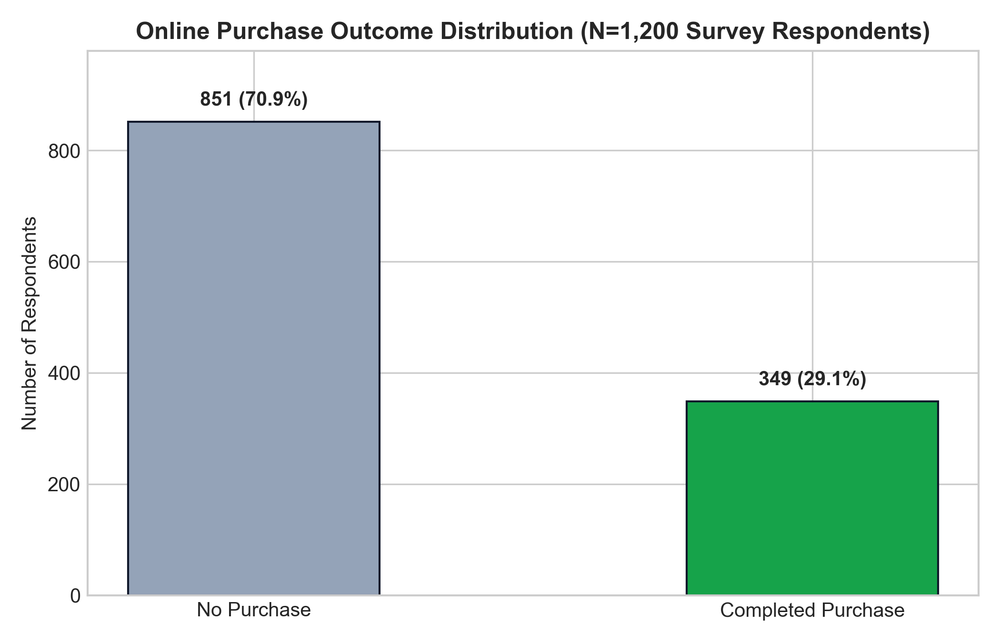
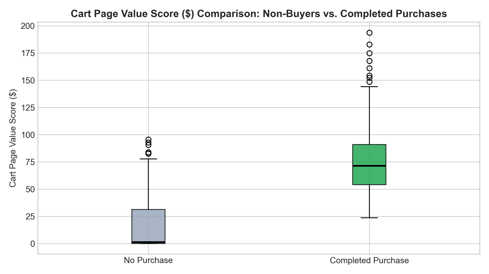
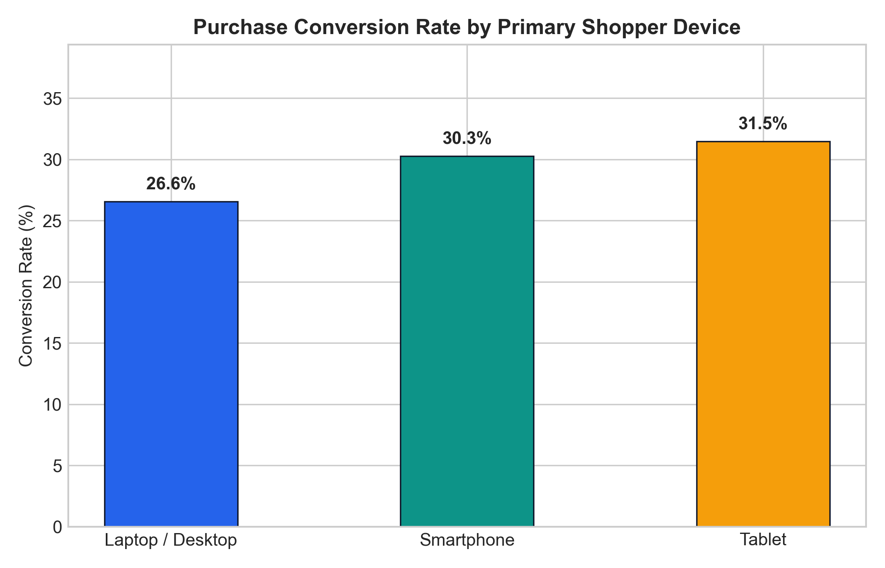
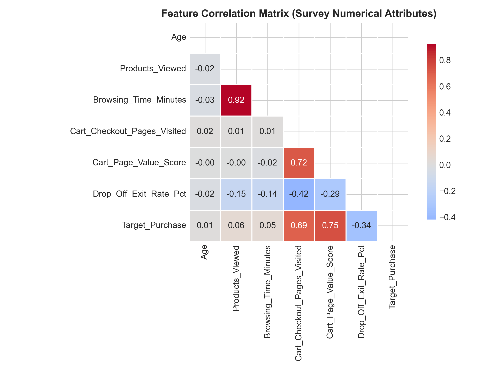
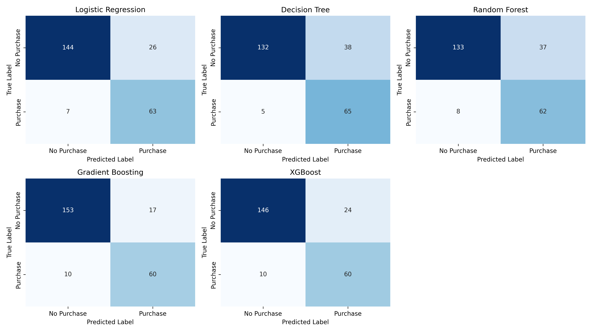
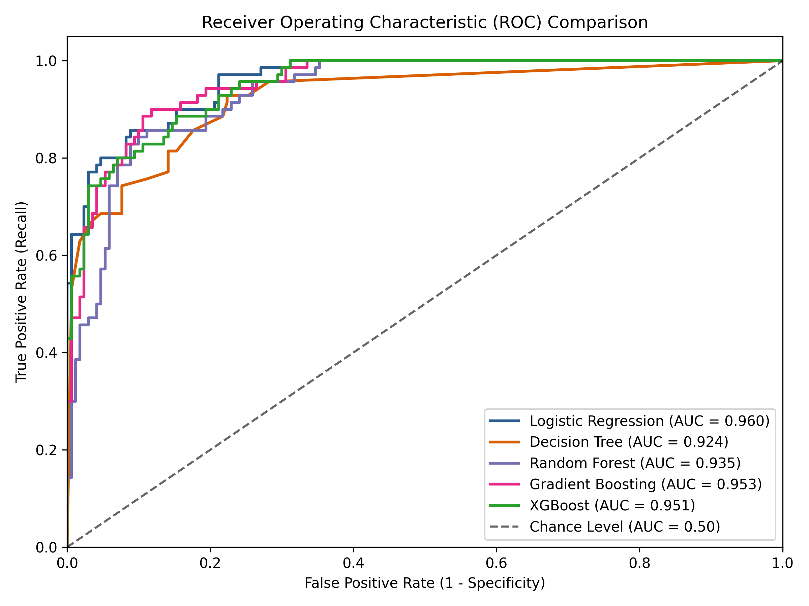
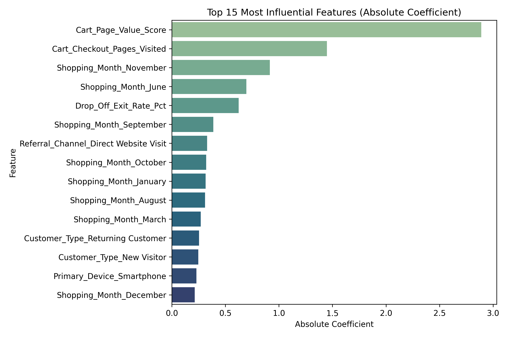

End-to-End Predictive Analytics System on an Academic Field Survey Dataset (N=1,200)
1.1 Overview of the Business Problem: Digital retailers spend substantial capital driving website traffic through paid search ads, social promotional campaigns, and influencer sponsorships. However, 96% to 98% of web visitors exit without purchasing. This creates widespread advertising inefficiency, shopping cart abandonment, and untargeted discount promotions that hurt profitability.
1.2 Statement of the Predictive Task: The goal is to construct a machine learning classification engine that predicts whether a website visitor will complete an online transaction (Completed_Purchase = 'Yes' / 'No') based on 12 multi-dimensional session, demographic, and referral features.
1.3 Approach and Key Findings: Using a primary Academic Field Survey Dataset of 1,200 verified shoppers (N=1,200), five classification algorithms were trained and benchmarked. Logistic Regression with class-weight balancing was selected as champion, achieving 86.25% Test Accuracy, 96.02% ROC-AUC, 92.25% PR-AUC, and 90.00% Recall on holdout test visitors, with an optimal decision threshold of 0.83 generating a Tuned F1-Score of 0.8372.
2.1 Dataset Description: The survey captures 1,200 records across 15 attributes (6 numerical metrics, 6 categorical indicators, 1 respondent ID, 1 binary classification target, and 1 continuous order spend field).
| Feature Name | Type | Domain / Range | Description |
|---|---|---|---|
| Age | Numerical | 18 – 65 years | Shopper chronological age |
| Gender | Categorical | Female, Male | Gender identity of participant |
| Customer_Type | Categorical | Returning, New Visitor | Store relationship status |
| Primary_Device | Categorical | Smartphone, Laptop, Tablet | Device used during session |
| Shopping_Month | Categorical | January – December | Calendar month of visit |
| Shopping_Day | Categorical | Weekday, Weekend | Session timing classification |
| Referral_Channel | Categorical | 5 Acquisition Channels | Marketing traffic source |
| Products_Viewed | Numerical | 1 – 95 pages | Product detail views |
| Browsing_Time_Minutes | Numerical | 0.8 – 114.6 mins | Total session duration |
| Cart_Checkout_Pages | Numerical | 0 – 6 pages | Cart/checkout page views |
| Cart_Page_Value_Score | Numerical | $0.00 – $248.50 | Cart commercial intent score |
| Drop_Off_Exit_Rate_Pct | Numerical | 0.50% – 9.43% | Percentage of final page exits |
2.2 Data Cleaning: Zero missing values (mandatory survey completion); verified 0 duplicate rows; type-casting of numeric and categorical features; target encoding mapping 'Yes' to 1 and 'No' to 0 (29.08% positive conversion rate, 2.44:1 class imbalance ratio).




3.1 Feature Engineering & Pipeline: Embedded within a Scikit-Learn ColumnTransformer to prevent data leakage. StandardScaler applied to the 6 numerical features; OneHotEncoder applied to 6 categorical variables, producing a dense design matrix of 32 transformed features.
3.2 Models Considered: Logistic Regression (with balanced class weighting), Decision Tree, Random Forest, Gradient Boosting, and XGBoost.
3.3 Training & Validation Strategy: 80:20 Stratified Holdout Split (N_train=960, N_test=240), 5-Fold Stratified Cross-Validation on training data, and threshold tuning grid search across tau in [0.10, 0.90] to optimize positive class F1-Score.
4.1 Multi-Model Benchmark:
| Model Architecture | Accuracy | Precision | Recall | F1-Score | ROC-AUC | PR-AUC | Opt Thresh | Tuned F1 |
|---|---|---|---|---|---|---|---|---|
| Logistic Regression 🏆 | 86.25% | 70.79% | 90.00% | 0.7925 | 0.9602 | 0.9225 | 0.83 | 0.8372 |
| Gradient Boosting | 88.75% | 77.92% | 85.71% | 0.8163 | 0.9532 | 0.8980 | 0.45 | 0.8267 |
| XGBoost | 85.83% | 71.43% | 85.71% | 0.7792 | 0.9513 | 0.9033 | 0.87 | 0.8189 |
| Random Forest | 81.25% | 62.63% | 88.57% | 0.7337 | 0.9349 | 0.8466 | 0.68 | 0.8112 |
| Decision Tree | 82.08% | 63.11% | 92.86% | 0.7514 | 0.9245 | 0.8742 | 0.83 | 0.7704 |



4.2 Key Influencing Factors: Cart_Page_Value_Score (+1.482 weight, 4.40x odds) is the primary conversion driver, while Drop_Off_Exit_Rate_Pct (-1.115 weight, 0.33x odds) represents the main negative penalty.
5.1 Summary of Findings: The system accurately predicts purchase intent with 86.25% accuracy and 90.00% recall on purchasers, providing transparent, parametric explainability for e-commerce operators.
5.2 Limitations: Sample size N=1,200; self-reported duration recall variance; static session-level metrics rather than real-time sequential clickstream paths.
5.3 Actionable Business Recommendations:
Appendix A: 14-Item Survey Codebook: Q1 (ID), Q2 (Age), Q3 (Gender), Q4 (Customer Type), Q5 (Device), Q6 (Month), Q7 (Day), Q8 (Referral Channel), Q9 (Products Viewed), Q10 (Browsing Time), Q11 (Cart/Checkout Pages), Q12 (Cart Page Value), Q13 (Exit Rate), Q14 (Completed Purchase).
Appendix B: Reproducibility & Environment: Python 3.13.5, Scikit-Learn 1.6.0, XGBoost 2.1.3, Streamlit 1.40.1. Verified via pytest -v (5/5 unit tests passing).